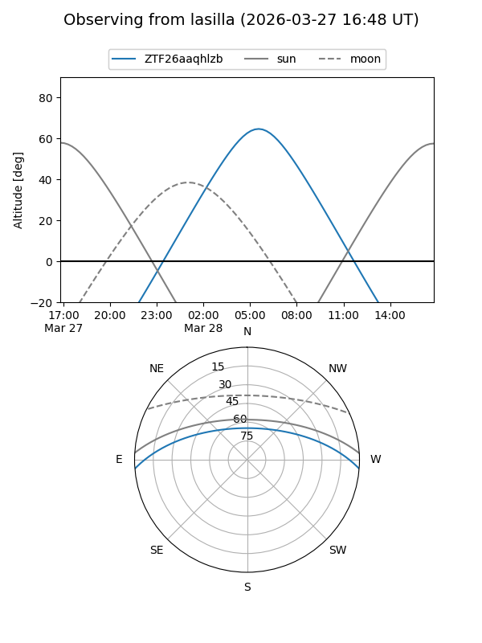
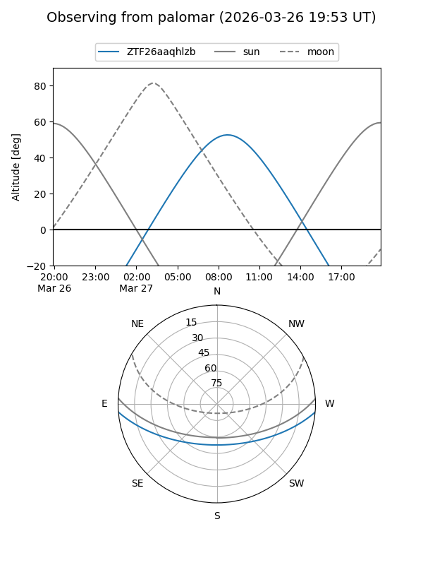

ZTF26aaqhlzb
Target ZTF26aaqhlzb at 2026-03-27 10:43
Aliases and brokers:
FINK: link
Lasair: link
ALeRCE: link
alt names
ZTF26aaqhlzb (ztf,fink_ztf)
Coordinates:
equatorial (ra, dec) = 197.7195,-3.81646
equatorial (HMS+DMS) = 13:10:52.67,-03:48:59.26
galactic (l, b) = (312.2968,+58.70137)
Flags:
Photometry:
last ztfg=17.61
1 ztfg detections
Lightcurve
Visibility


Additional plots